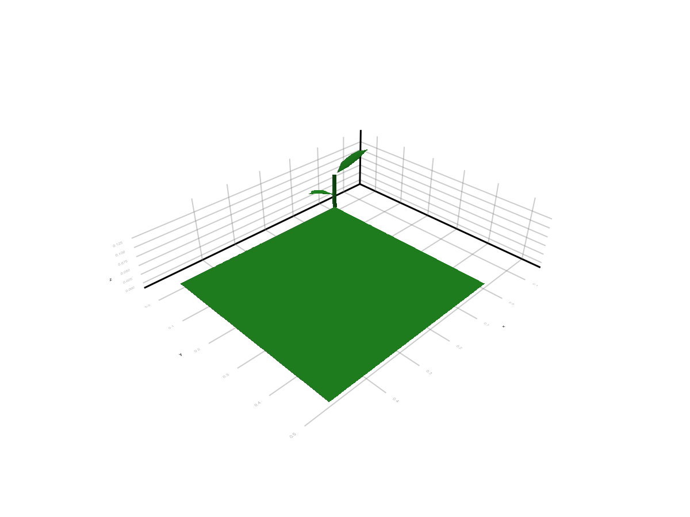
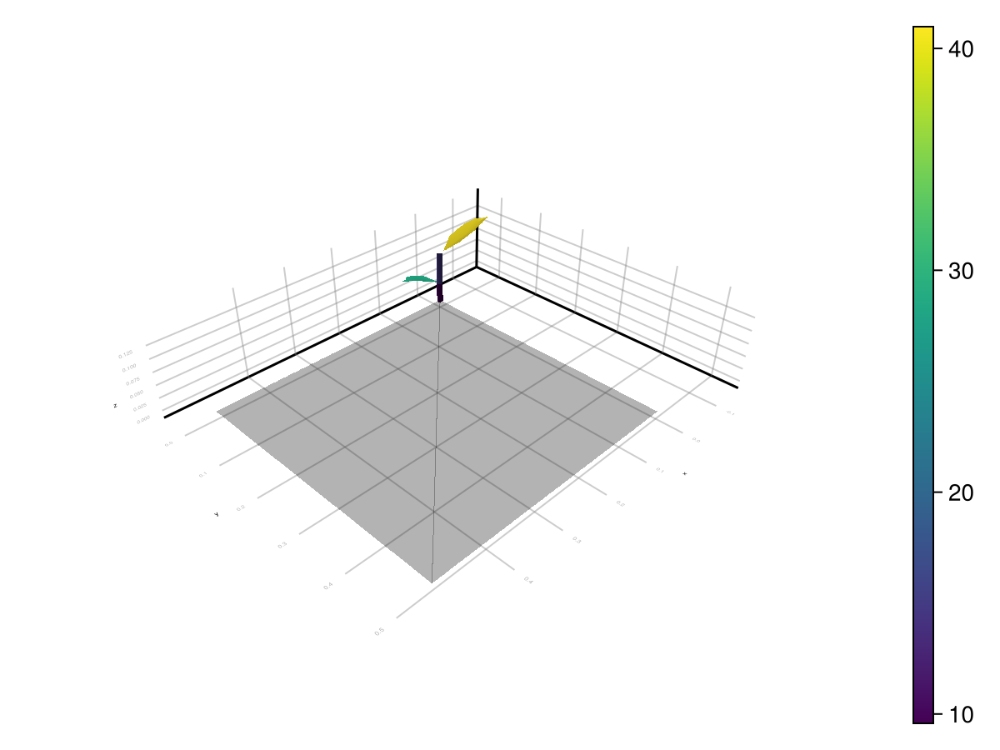

Outputs
The current Julia package exposes light results in three increasingly concrete forms:
- in memory as
LightBudget - attached back onto MTG nodes as ARCHIMED-style attributes
- written to disk when you export the enriched scene
This page documents those three layers and then explains the ARCHIMED-style CSV outputs that still appear in the examples and regression harness.
1. In-Memory Outputs: LightBudget
The core output of run_light for one meteo row is:
step = run_light(sim, row)
budget = step.budgetThe main grouped fields are:
budget.incident_fluxbudget.incident_energybudget.absorbed_fluxbudget.absorbed_energy
Each one is then split into:
initial: first-order interception onlytotal: first-order plus scattering
and by waveband, for example:
parnir
Typical accesses:
budget.incident_flux.initial.par
budget.incident_flux.total.par
budget.absorbed_energy.total.nirEach leaf of that structure is a dictionary keyed by node id.
If you need canopy-view metadata for coupled models, step.sky_fraction stores the per-node visible-sky fraction when options.include_sky_fraction=true. When using a YAML config, read_options enables that option when component_variables.sky_fraction or opf_variables.sky_fraction is true.
2. Attached Outputs: ARCHIMED Attribute Names
The convenience layer for visual inspection is attach_light_step!:
attach_light_step!(
scene,
step;
fields=[:incident_par_flux, :incident_par_energy, :absorbed_par_energy],
)The default mappings are:
| Field selector | Attached attribute |
|---|---|
:area | area |
:incident_par_initial_flux | Ri_PAR_0_f |
:incident_nir_initial_flux | Ri_NIR_0_f |
:incident_par_flux | Ri_PAR_f |
:incident_nir_flux | Ri_NIR_f |
:incident_par_initial_energy | Ri_PAR_0_q |
:incident_nir_initial_energy | Ri_NIR_0_q |
:incident_par_energy | Ri_PAR_q |
:incident_nir_energy | Ri_NIR_q |
:absorbed_par_initial_flux | Ra_PAR_0_f |
:absorbed_nir_initial_flux | Ra_NIR_0_f |
:absorbed_par_flux | Ra_PAR_f |
:absorbed_nir_flux | Ra_NIR_f |
:absorbed_par_initial_energy | Ra_PAR_0_q |
:absorbed_nir_initial_energy | Ra_NIR_0_q |
:absorbed_par_energy | Ra_PAR_q |
:absorbed_nir_energy | Ra_NIR_q |
:sky_fraction | sky_fraction |
The meaning follows the historical ARCHIMED naming:
area: prepared object surface area inm^2Ri: intercepted radiationRa: absorbed radiation_0_: first-order only- no
_0_: after scattering has been added _f: irradiance-like quantity inW m^-2_q: energy per component and per step inJ
You can also rename attached attributes for downstream packages. For example, PlantBiophysics can use Ra_SW_f as an alias for absorbed NIR:
attach_light_step!(
scene,
step;
fields=[:area, :absorbed_par_flux, :absorbed_nir_flux, :sky_fraction],
names=Dict(:absorbed_nir_flux => :Ra_SW_f),
)3. Disk Outputs: Exported Scenes
Once results are attached, you can export the enriched scene:
write_scene("output/scene_with_light.opf", scene)Supported export formats are:
.ops.opf.gwa
The export path determines the format.
This is currently the main disk output mechanism of ArchimedLight.jl: attach node attributes, then write the scene back out.
Example Output Images


ARCHIMED-Style CSV Tables
You will still see files such as:
component_values.csvscene_values.csvsummary.csv
in:
- the archived Java outputs
- the example comparison folder
- the regression and release harnesses under
test/
Those files remain valuable because they are the main parity targets against the historical implementation.
component_values.csv
Component-scale outputs, typically one row per scene node and step. Common columns are:
step_numberobject_idsource_topology_idgrouptypeareaRi_*Ra_*
You can write this table from already-computed results:
sim, meteo = read_simulation("example_2/config.yml")
series = run_light(sim, meteo)
write_component_values("output/component_values.csv", sim, series)step_index_base=0 is available for compatibility with historical harness outputs.
scene_values.csv
Scene-scale summary per meteo step.
summary.csv
Grouped aggregation, usually by item, group, and type.
Which Output Form Should You Use
- use
LightBudgetwhen staying inside Julia - use
attach_light_step!when you want visual inspection or downstream scene export - use the ARCHIMED-style CSVs when doing parity work with historical datasets or harnesses